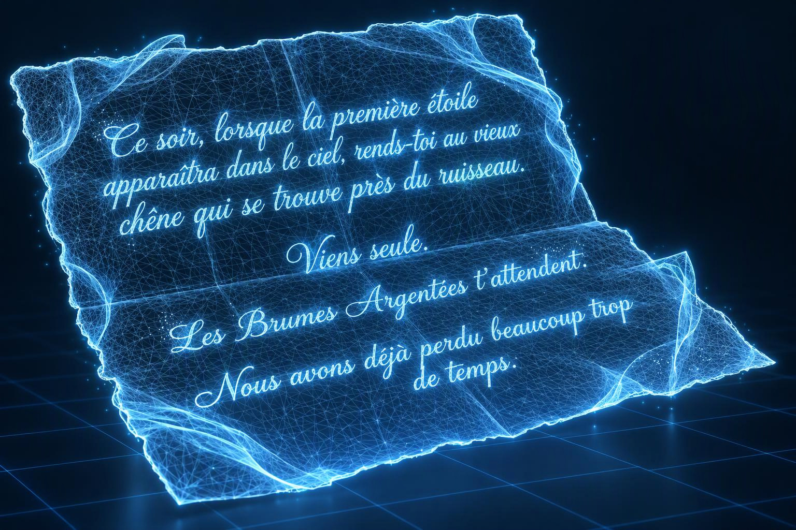

Que faisait son nom de famille sur l'enveloppe ? Le plus étrange restait cependant autre chose. Il n'y avait ni timbre ni adresse. Comment cette envoloppe était-elle apparue là toute seule. prit l'enveloppe. Un sceau de cire bleue fermait le rabat. Dessus était gravé un symbole qu'elle n'avait jamais vu : un croissant de Lune entourant une étoile. Au moment où ses doigts effleurèrent le sceau, une chaleur parcourut sa main. sursauta et laissa tomber l'enveloppe. Pendant une fraction de seconde, elle crut voir le symbole briller. Puis tout redevint normal. Le silence envahit la pièce. Même la pluie semblait s'être arrêtée. Un mouvement attira soudain son attention.
Près de la porte, son chat, un vieux matou gris qui dormait presque toute la journée, était parfaitement réveillé, immobile, les oreilles dressées, le regard fixe, hypnotisé par l'enveloppe. Lentement, très lentement, il se dressa, recula, sans quitter l'enveloppe des yeux. Il se cogna à la porte, poussa un miaulement effrayant et s'enfuit de la chambre. n'avait jamais vu son chat agir ainsi. Jamais. Elle voulut le suivre, le rassurer, mais son regard ne quittait pas l'enveloppe ! Elle reposait par terre, à ses pieds. Le cœur battant, elle la ramassa, inspira profondément et finalement brisa le sceau.
À l'instant même où la cire se fendit, une légère lumière argentée parcourut les bords de la lettre. Le papier se déplia presque tout seul, comme s'il avait attendu ce moment depuis très longtemps. Des mots apparurent non pas écrits à l'encre, mais comme s'ils se formaient sous ses yeux.
